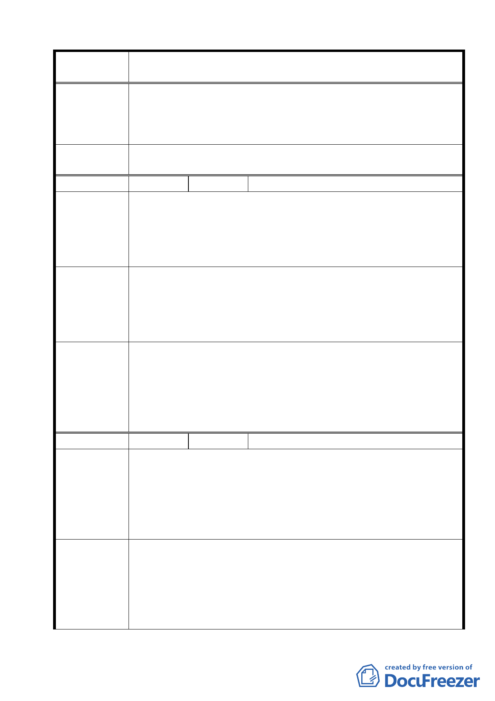

案名
委員會議
決議
編號
陳情理由
建議辦法
委員會議
決議
編號
陳情理由
建議辦法
變更臺北市士林區陽明山山仔后地區第二種住宅區為特定住宅區
細部計畫案
2.若前述建議未蒙採納，建議放寬檢討範圍及採全面調降，即計畫
調降之容積率由更大範圍之全部私有土地平均分擔，以減少對
單一私有土地所有權人之衝擊。如果因此需花費較多時間，本
行同意考量配合。
同編號 2 決議內容。
7 陳情人 黃清溪
1.建業路至今十年未能全通車，若不興建，請政府歸還當時向人民
徵收的土地。
2.本計畫名為山仔后地區細部計畫，惟其計畫範圍並非「山仔后地
區」，真正「山仔后地區」是山仔后段的土地，即新安段一小段
地區，不是目前計畫範圍的華崗段或其他段的地區，請市府查明。
1.計畫範圍內建業路應早日全線興建完成通車，解決地區交通問
題，讓沿線居民可享受臺北市公車服務。
2.建議市府將陽明山山仔后地區作為計畫檢討範圍，亦即應將本人
現住的房屋跟土地，以及其他人所有之山仔后段土地（即新安段
一小段土地）規劃在此次變更「山仔后細部計畫」範圍內。
1.有關本項陳情市府業說明建業路北段是否仍有闢建需要，將另案
檢討辦理。
2.本案除市府本次會議所送修正計畫書第 2-20 頁（四）文字修正
為「建築基地地面高度設計：建築基地地面設計以維持原地形地
面為原則，但經整地後基地地面高度不得超過 1.2 公尺」外，其
餘依市府本次會議所送修正計畫書內容通過。
8 陳情人 張正一等人
1.新安段一小段地區，因地勢平坦，生活機能便利，一直是山仔
后地區主要群聚村莊，惟因 68 年 2 月 12 日變更原保護區為住
宅區，導致目前房屋老舊卻無法改建。
2.建業路自陳水扁市長任內即徵收土地並計畫開路，現以更換 3
任市長，仍未見施工。
3.山仔后地區 40 公頃土地開發後，居民飲用水將是最大隱憂。
1.建議將新安段一小段地區納入本計畫案範圍。
2.為便利地區交通，建議道路工程不可拖延。
3.建議從嚴監督自來水公司，加強該區域給排水設備工程的規劃。
4.希望土地開發細節能與當地居民溝通，讓里民瞭解避免過度開
發，造成居住環境擁擠，生活品質低落。
5.依照都市計畫相關規定，細部計畫制訂時，當開發面積達 1 公
19